Round five, and the lesson of the four before it: the 12-petal + 12-medallion geometry was
never the problem — the craft was. Flat equal hairlines read spa; architectural drawing read
literal. So this round holds the geometry constant — every radius is the murti's own, from
iconography/geometry/grid.json: linga at .22, jaladhari at .32, petal tiers at .48/.62,
the water's calm to .84, the twelve medallions at .92 — and varies only the craft register:
struck, carved, relieved, drawn, broken, jewelled. Gold stays at god-points: the linga always,
the Adityas only in the ceremonial one. Each row: mark · register · live lockup with the
shipped R-dot wordmark · 64/32/16 px unassisted · sacred night.
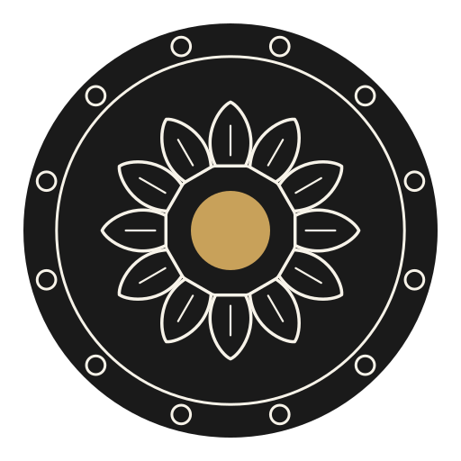
1 · tanka Struck like a coin — the whole sanctum plan engraved into one solid disc: waterline groove, twelve sun-seats cut around the rim, both petal tiers chased into the metal, the Lord solid gold at the hub. The emboss / foil / wax register.
643216
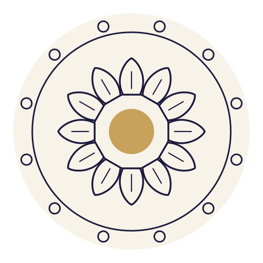
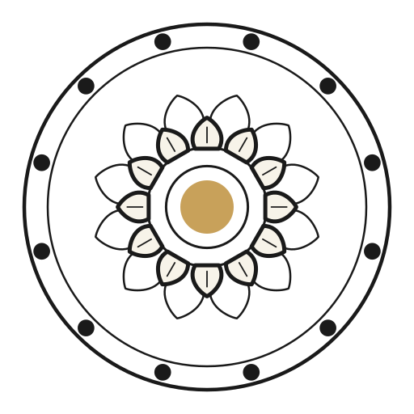
2 · utkirna The mason's line — a twin-line rim channel holds the twelve suns like beads of a mala; the upper petals cut with the heavy chisel, the lower tier with the light one; the god-point circled at the centre.
643216
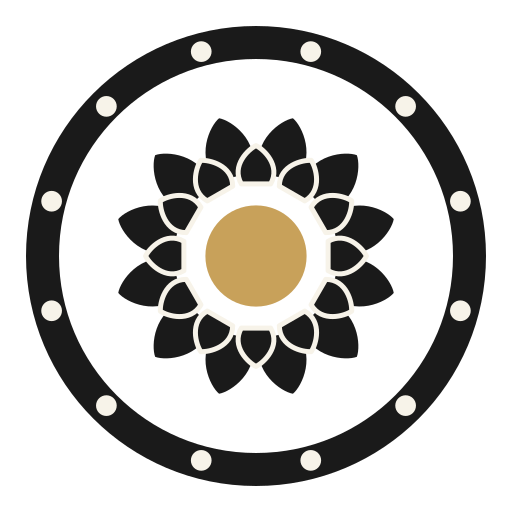
3 · shila Pure relief — ink is stone, ivory is light, no outlines anywhere. The heavy rim is pierced by twelve sun-windows; the lotus stands in two solid tiers; the linga is gold at its true measured scale.
643216
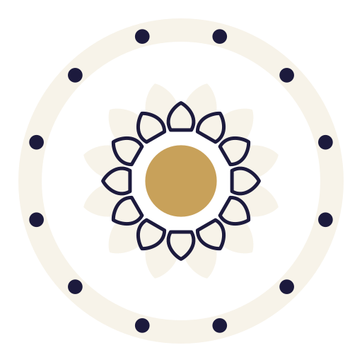
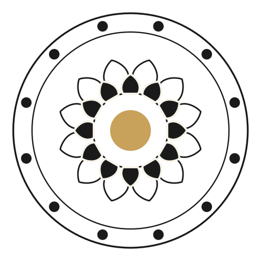
4 · dvitala The faithful portrait — everything exactly where the murti puts it: twelve upper petals solid, twelve lower in fine line behind them, the waterline, and the twelve medallions riding between water and rim.
643216
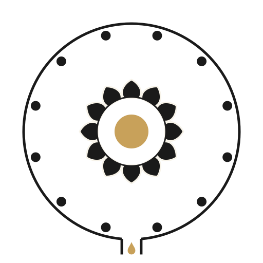
5 · jala Water is space, not a line — the emptiest one. The rim opens at the nali: the circle is deliberately broken toward the devotee, and the golden drop leaves the sanctum, carrying grace out of the mark.
643216
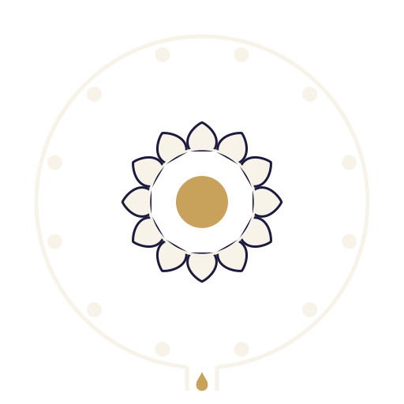
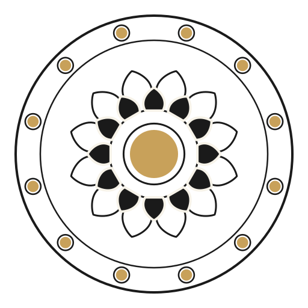
6 · aditya The ceremonial glory — the twelve Adityas set as gold stones in carved seats, gold at hub and rim both: the top of the sanctity ladder. For night grounds, invitations, the drum of the temple.